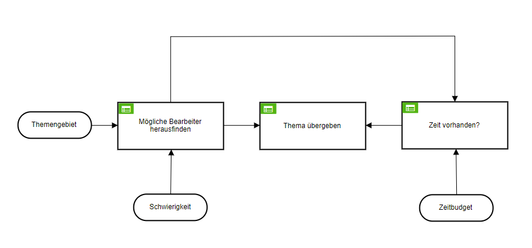

Das Projekt hat sich als gute Grundlage für eine Vertiefung im Bereich des Wissensmanagements herausgestellt. Wir konnten im Kurs AWIM2017 viele Methoden zur Modellierung und Gestaltung von Wissen
und Prozessen, Fällen, Entscheidungen sowie die Erstellung und Visualisierung zusammenhängender Begrifflichkeiten kennenlernen. Wissensmanagement ist sehr spannend und ich möchte mehr über das Thema erfahren.
Business Process Model and Notation
Kurzbeschreibung: Der Prozess der „Planung der ordentlichen Sitzung der IT-Kommission“ beschreibt den Ablauf des genannten Prozesses mit besonderem Hinblick auf die Datenobjekte, die aus den einzelnen Aufgaben im dargestellten Prozess entstehen und in welchen Aufgaben sie sich verändern bis die Sitzung der IT-Kommission nachbearbeitet wurde.
Beschreibung: Der Prozess beginnt mit einem Planungsbedarf für die nächste anstehende ordentliche IT-Kommissionsitzung. Aus diesem Prozessstart gehen automatisch Themen einher, welche als Datenobjekt dem/ der Leiter/-in der IT-Kommission, aufgrund des abgearbeiteten Protokolls der jüngst vergangenen Sitzung, vorliegen. Als erstes wird ein Termin für die nächste Sitzung durch der/ die Leiterin/-in festgelegt. Anschließend werden die Themen priorisiert, woraus eine Themenliste entstehet und eine Liste mit Informationen repräsentiert. Sind die Themen priorisiert ist es die Aufgabe der Leitung der IT-Kommission einen Termin mit dem/ der Präsidentin zu vereinbaren. Dazu sendet die Leitung der IT-Kommission einen Vorschlag. Die Präsidentin bestätigt diesen oder gibt einen alternativen Vorschlag zurück. Wenn 1 Woche kein Feedback seitens der Präsidentin erfolgt wird eine Erinnerung versandt. Der Vorgang wiederholt sich bis eine Antwort eingetroffen ist. Ist der Termin eingetroffen wird der Termin gehalten und die Themen der nächsten Sitzung festgelegt. Die Themen werden nun in eine Agenda verfasst. Anschließend werden die Einladungen für die nächste Sitzung versendet. Mitglieder und Gäste erhalten zusätzlich die Agenda und können Verbesserungsvorschläge einreichen. Die Agenda wird daraufhin ausgebessert. Gleichzeitig werden die Themen der Agenda ausgearbeitet. Hierzu wird evaluiert welcher Aufwand hinter den einzelnen Themen steckt. Es stellt sich die Frage ob ein Thema deligierbar ist oder nicht. Themen die nicht deligierbar sind werden durch die Leitung ausgearbeitet. Themen die deligierbar sind werden durch die Studentische Hilfskraft übernommen, welcher diese an die Leitung übergibt sobald diese fertig gestellt wurden. Sind diese nicht zufriedenstellend muss die Leitung der IT-Kommission die Ausarbeitung korrigieren. Sind alle Themen bearbeitet wird die Sitzung vorbereitet und gewartet bis der Zeitpunkt der Sitzung eintrifft. Die Sitzung wird eingeleitet und es wird die Tagesordnung vorgestellt. Anschließend wird das Protokoll der letzten Sitzung laut Lieferungen überprüft. Anschließend werden die Themen durch alle Mitglieder diskutiert und Entscheidungen festgehalten. Die Leitung der IT-Kommission beendet die Sitzung. Die Studentische Hilfskraft hat über die gesamte Sitzung Notizen erstellt. Wurde bei der Eröffnung der Sitzung festgestellt das die Sitzung vertagt werden muss werden die Einladungen neu versandt und ein neuer Termin gewählt. Die Sitzung wird anschließend nachbearbeitet. Protokollpunkte werden mit der Studentischen Hilfskraft abgestimmt und übergeben. Es wird gewartet bis das Protokoll wieder eintrifft. Die Mitglieder erhalten das Protokoll um gegebenfalls Verbesserungsvorschläge einzubringen. Dafür haben die Mitglieder 1 Woche Zeit. Das Protokoll wird anschließend im SharePoint abgespeichert und neue Themen aus den Diskussionen der letzten Sitzung entnommen bevor die Sitzung als vollständig abgeschlossen angesehen wird.
Date:
Juli 2017
Service:
AWIM
Case Management Model and Notation
Der Fall der Evaluation des Arbeitsaufwands der verschiedenen Themen tritt wiederholt für jeden Fall auf. Dies ist bereits im Prozess bekannt. Es wird im ersten Schritt das Thema gesichtet, welches die Prüfung beinhaltet, welche Anforderungen an dieses Thema gestellt werden, welches Ziel durch die Bearbeitung angestrebt wird und wie viel Zeit für die Bearbeitung kalkuliert wird. Sobald diese Notwendigen Aufgaben erfüllt sind erreicht die/der Bearbeiter/-in den Meilenstein das, dass Thema kategorisiert wurde. Nach Ermessen kann der Bearbeiter jederzeit weitere Anforderungen definieren und mögliche Quellen ermitteln aus welchen Informationen zur Bearbeitung herangezogen werden können. Es wird ermittelt welche SHK die Aufgabe bearbeiten könnte. Wenn der Meilenstein der Identifikation des Bearbeiters erreicht ist kann der Fall abgeschlossen werden. In jedem Schritt kann der Bearbeiter den Fall jederzeit verlassen, wenn die/der Bearbeiter/-in das Thema selbst bearbeiten möchte.
Das Thema muss bevor der Fall abgeschlossen werden kann unbedingt gesichtet werden. Dies kann sich gegeben falls wiederholen. Anschließend ist das Thema kategorisiert und der Fall kann ab diesem Zeitpunkt durch die durch bloße Sichtung abgeschlossen werden (um es ggf. in der nächsten Sitzung zu diskutieren) oder im Vorfeld durch die Leitung der IT-Kommission selbst übernommen werden. Ansonsten wird die weitere Bearbeitung geplant. Hierbei wird der Bearbeiter durch eine DecisionTask identifiziert. Anschließend kann die Leitung der IT-Kommission mögliche Quellen ermitteln. Ist der Bearbeiter identifiziert kann der Fall verlassen werden. Es kann sich auch ein Freiwilliger für die Bearbeitung eines Themas melden. Auch hier kann der Fall anschließend verlassen werden.
Date:
Juli 2017
Service:
AWIM
Decision Model and Notation

Zuerst werden mögliche Bearbeiter herausgefunden. Das Themengebiet und die Schwierigkeit eines Themas grenzen die möglichen Bearbeiter ein, welche der Verantwortliche der Decision als Ausgabe erhält. Im Anschluss gilt es die Verfügbare Zeit der Bearbeiter zu betrachten. Der Bearbeiter in der Tabelle welcher für ein Thema geeignet ist und noch Kapazitäten hat, wird nach Single Hit First Kz. F ausgewählt. Inkonsistenzen existieren in Tabelle zwei, da hier theoretisch die Personen die keine Kapazitäten haben den Auftrag erhalten. Die Bedingung ist laut der Logik erst erfüllt, sobald die erste Zeile „true“ ist.
Date:
Juli 2017
Service:
AWIM
SKOS
Scheme
Concept
Concept
Concept
Concept
Planung der ordentlichen Sitzung der IT-Kommission
IT-Kommission
Mitglieder
Rechenzentrum
TLSO
LeitungRZ
Leitung IT-Kommission
SHK
Dekan
Studentischer Vertreter
Sitzung
Folien
Agenda
Tagesordnungspunkte
Raum
Termin
Einladung
Gäste
Datenschutzbeauftragter
Interessenten
Betroffene
Präsidentin
Diskussion
Ideen
Protokoll
Empfehlungen
Themen
Sharepoint
Themengebiet
Bearbeiter
Schwierigkeit
Arbeitsaufwand
Anforderungen
Hier können Sie die SKOS-Keywords herunterladen.
Date:
Juli 2017
Service:
AWIM
Faktennetz und RDF
Hier können Sie das RDF-File zum folgendem WebVOWL-Netz herunterladen. Download!
Date:
Juli 2017
Service:
AWIM
Projektbericht
Hier können Sie mein Projektprotokoll herunterladen. Hier klicken!
{kind=link}
{kind=link}
{kind=link}
{kind=link}
{kind=link}
{kind=link}
{kind=link}
{kind=link}
{kind=link}
{kind=link}
{kind=link}
{kind=link}